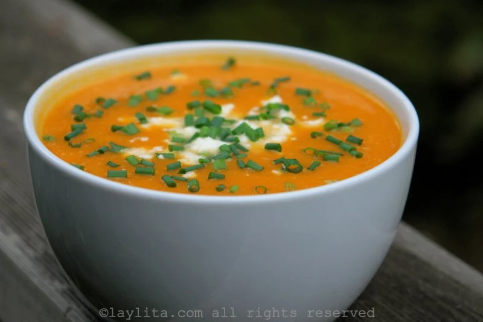

Home
Acerca de
Contacto
Registrese
Sucursales
Nuestros Clientes
La cocina de Juan
Receta

Ingredientes
Cant
Producto
1
Calabaza grande (aprox 1.5 kg)
2
Cucharadas de mantequilla
1
Cebolla mediana, picada
2
Dientes de ajo, picados
4
Taza de caldo de verduras
1/2
Taza de crema de leche
1
Sal y pimienta a gusto
1
Perejil fresco picado para decorar(opcional)
Instrucciones
Preparar la calabaza:
Comienza cortando la calabaza por la mitad y retirando las semillas y las fibras. Pela la calabaza y córtala en cubos de tamaño uniforme.
Saltear las verduras:
En una olla grande, derrite la mantequilla a fuego medio. Agrega la cebolla picada y el ajo picado, y cocina hasta que estén dorados y fragantes, aproximadamente de 5 a 7 minutos.
Cocinar la calabaza:
Agrega los cubos de calabaza a la olla y revuelve para cubrirlos con la mezcla de cebolla y ajo. Cocina durante unos 5 minutos, revolviendo ocasionalmente.
Agregar el caldo:
Vierte el caldo de verduras sobre la calabaza y lleva la mezcla a ebullición. Reduce el fuego a medio-bajo y deja cocinar a fuego lento durante unos 20-25 minutos, o hasta que la calabaza esté tierna y fácilmente se pueda triturar con un tenedor.
Triturar la sopa:
Con una licuadora de mano o en lotes en una licuadora tradicional, tritura la sopa hasta que quede suave y cremosa.
Añadir la crema:
Vuelve a colocar la sopa en la olla si la has triturado en una licuadora. Agrega la crema de leche y revuelve bien. Calienta la sopa a fuego medio-bajo hasta que esté completamente caliente. Asegúrate de no llevarla a ebullición una vez que se haya agregado la crema para evitar que se corte.
Sazonar y servir:
Prueba la sopa y ajusta el condimento, agregando sal y pimienta al gusto. Sirve caliente, espolvoreando con perejil fresco picado si lo deseas.